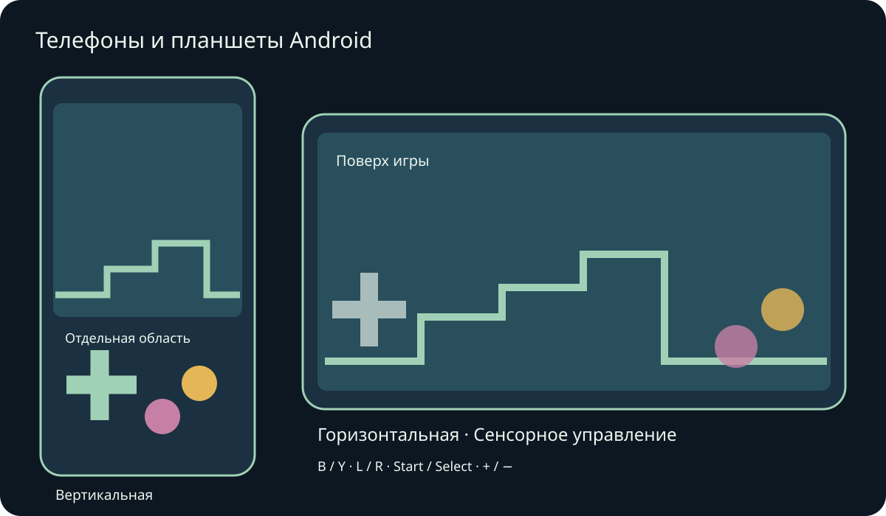
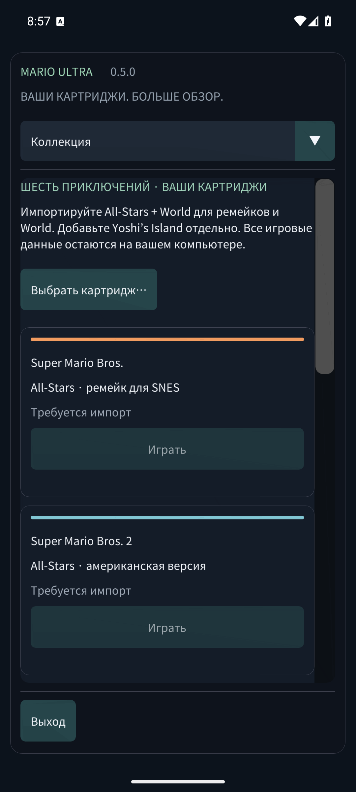

Mario Compilation Ultra 0.5.0
Телефоны и планшеты Android

Установите APK для телефона/планшета Android и откройте Mario Compilation Ultra. Публичный APK GitHub просит выбрать ваши картриджи; личная версия с ROM уже содержит шесть игр. APK Quest — отдельное приложение для шлема. Нужны Android 8 или новее и OpenGL ES 3; включены ARM64, ARMv7 и x86_64.
Поворот и изменение размера окна сохраняют игру. Поля учитывают вырезы и системную навигацию.
Несколькими пальцами можно двигаться, бежать и прыгать одновременно. При подключённом геймпаде автоматические кнопки скрываются. Назад Android открывает меню.
Кнопки соответствуют SNES: обычно B — прыжок, Y — бег. Доступны L, R, Start и Select. Вид переключает пять режимов, минус/плюс меняют масштаб. Удерживайте перемотку для возврата назад. Настройки сразу ставят игру на паузу. Меню прокручивается пальцем; на узком экране раздел выбирается сверху.
- Ориентация экрана
- Сенсорное управление
- Расположение кнопок
- Размер сенсорных кнопок
- Непрозрачность кнопок
- Режим для левшей
- Вибрация при касании
- Не выключать экран во время игры
Состояния, перемотка и сохранения картриджа находятся в закрытом хранилище приложения. В фоне записывается батарейное сохранение и, если включено, слот продолжения 0. Обновление с той же подписью сохраняет прогресс. Удаление приложения или очистка данных удаляет локальные картриджи и сохранения. Слоты находятся в разделе сохранений и звука.
Проверки эмуляторов телефона и планшета отделены от испытаний на реальном устройстве. Производительность, геймпады, вырезы и окна зависят от модели. Версии macOS остаются экспериментальными и не проверены на реальном Mac. Точный охват приведён в отчёте.
